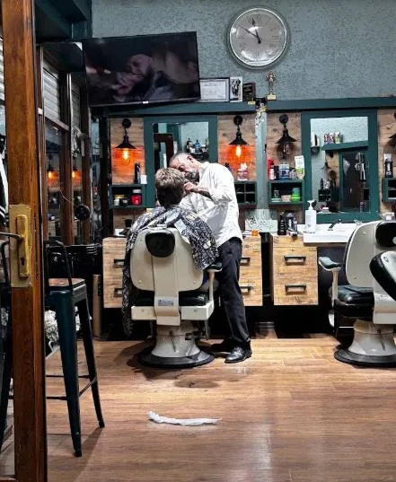
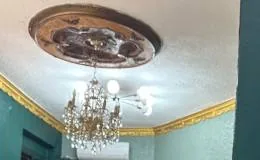
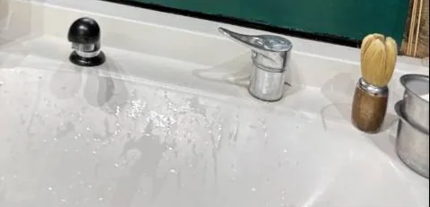
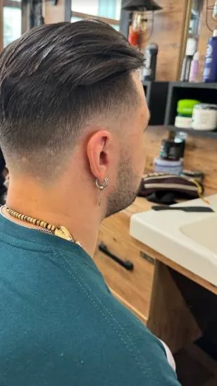

Berber · Kamer Hatun, Beyoğlu
Beyoğlu Erkek Kuaförü
Avizeli, yeşil duvarlı salonumuzda saç kesimi ve köpüklü ustura tıraşı. Boş saatinizi buradan seçin; geldiğinizde koltuk hazır olsun.
Google Haritalar'da 4,9 · 1.957 yorum- Adres
- Balık Sk. No:4, Kamer Hatun
- Telefon
- 0535 508 97 22
- Saatler
- Gelmeden önce arayın

Hizmetler
Saç ve sakal başta olmak üzere aşağıdaki hizmetleri veriyoruz. Modelinizi randevu alırken not olarak yazabilirsiniz.
Fiyatlar dönem dönem güncelleniyor. Güncel fiyatı gelmeden önce WhatsApp'tan sorun; listede olmayan bir hizmet için de yazın.
-
Saç kesimi
Randevu alMakas ya da makine; istediğiniz modeli nota yazın.
-
Sakal tıraşı
Randevu alKöpük, fırça ve ustura ile.
-
Saç & sakal
Randevu alİkisi bir arada, tek randevuda.
-
Çocuk kesimi
Randevu al12 yaş altı.
-
Cilt bakımı
SorunMaske ve bakım; içeriğini ve süresini sorun.
-
Saç boyama
SorunBeyaz kapatma ya da renk; önce görüşelim.
Salon
Adaçayı yeşili duvarlar, altın kartonpiyer, tavanda kristal avize. Tezgâhta köpük kâsesi ve tıraş fırçası.



Ustamız
Davut Abi
Salonun ustası Davut Abi. Onun koltuğuna oturmak istiyorsanız randevu alırken not alanına "Davut Abi" yazın; o gün salonda olup olmadığını da WhatsApp'tan sorabilirsiniz.
Randevu alRandevu
Hizmeti ve günü seçin, o günün boş saatleri listelensin. Seçtiğiniz saat size ayrılır ve ekranda bir randevu kodu görürsünüz.
Randevu ücretsizdir, ön ödeme yoktur. Gelemeyecekseniz kodunuzla haber verin; o saati başkasına açalım.
Telefonla: 0535 508 97 22
Randevunuz alındı
- Hizmet
- Gün
- Saat
- Kod
Değişiklik ya da iptal için bu kodla WhatsApp'tan yazın veya arayın.
Randevu telefonunuzun takvimine kaydolur ve 2 saat önce hatırlatır. Ayrıca randevudan önce salondan WhatsApp hatırlatması gelir.
Barber in Beyoğlu, near Taksim
Haircut, beard shave with foam and straight razor, kids' cut. We are on Balık Sokak No:4, Kamer Hatun, a short walk from Tarlabaşı Boulevard.
Ask the price on WhatsApp before you come — no surprises.
Sorular
Randevusuz gelebilir miyim?
Gelebilirsiniz; koltuk boşsa hemen, değilse kısa bir beklemeyle alırız. Beklemek istemiyorsanız randevu alın ya da arayın.
Fiyatlar ne kadar?
Fiyatlar hizmete göre değişir ve dönem dönem güncellenir. Güncel fiyatı WhatsApp'tan ya da telefonla sorabilirsiniz.
Çalışma saatleriniz nedir?
Saatlerimiz güne göre değişebiliyor. Gelmeden önce arayın ya da WhatsApp'tan yazın; en kolayı randevu almak.
Belirli bir ustayla çalışabilir miyim?
Randevu formundaki not alanına ustanın adını yazın (ör. "Davut Abi"). Uygun değilse size başka bir saat öneririz.
İstediğim modeli nasıl anlatırım?
Not alanına yazın ya da beğendiğiniz kesimin fotoğrafını WhatsApp'tan gönderin.
Randevumu bana hatırlatır mısınız?
Online randevu aldığınızda "Telefonuma ekle" ile randevu takviminize kaydolur ve 2 saat önce hatırlatır. Ayrıca randevudan önce salondan WhatsApp hatırlatması gelir.
Randevumu nasıl değiştirir veya iptal ederim?
Randevu kodunuzla WhatsApp'tan yazın ya da arayın.
Salon tam olarak nerede?
Kamer Hatun Mahallesi, Balık Sokak No:4, 34435 Beyoğlu/İstanbul. Tarlabaşı Bulvarı'na yakın bir ara sokakta; en kolayı "Yol tarifi" butonu.
Adres
Kamer Hatun Mah., Balık Sk. No:434435 Beyoğlu / İstanbul
Tarlabaşı Bulvarı'na yakın bir ara sokaktayız. En kolayı "Yol tarifi" butonu.
- Telefon ve WhatsApp
- 0535 508 97 22
- Saatler
- Gelmeden önce arayın ya da WhatsApp'tan yazın
Harita Google'dan yüklenir. Siz tıklamadan Google'a bilgi gitmez.